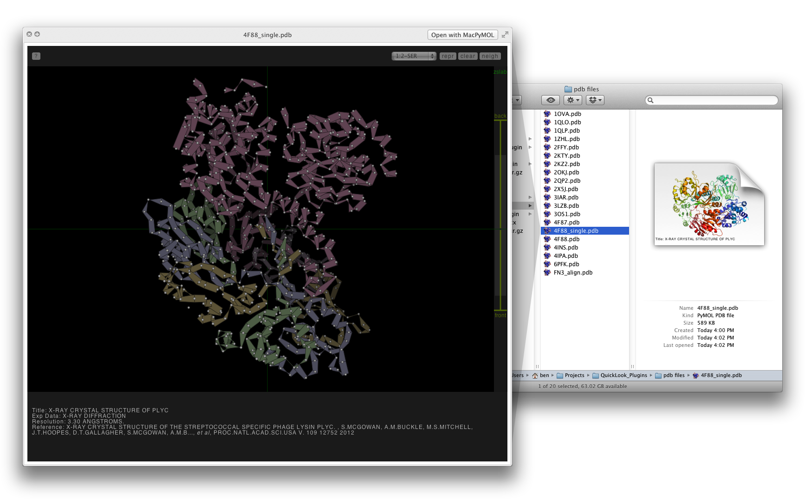
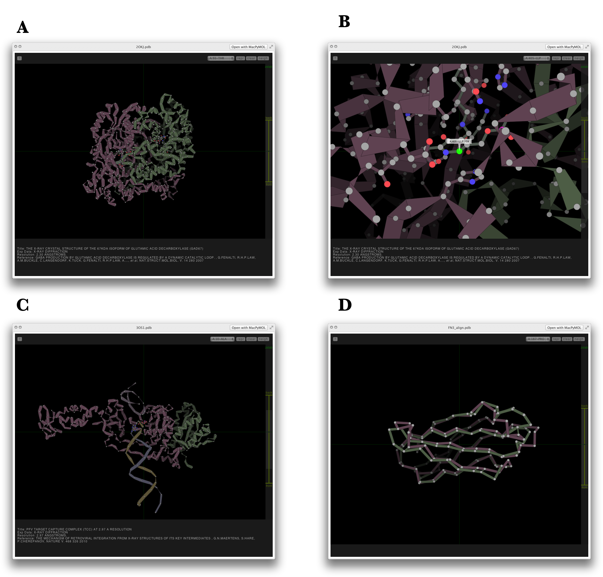
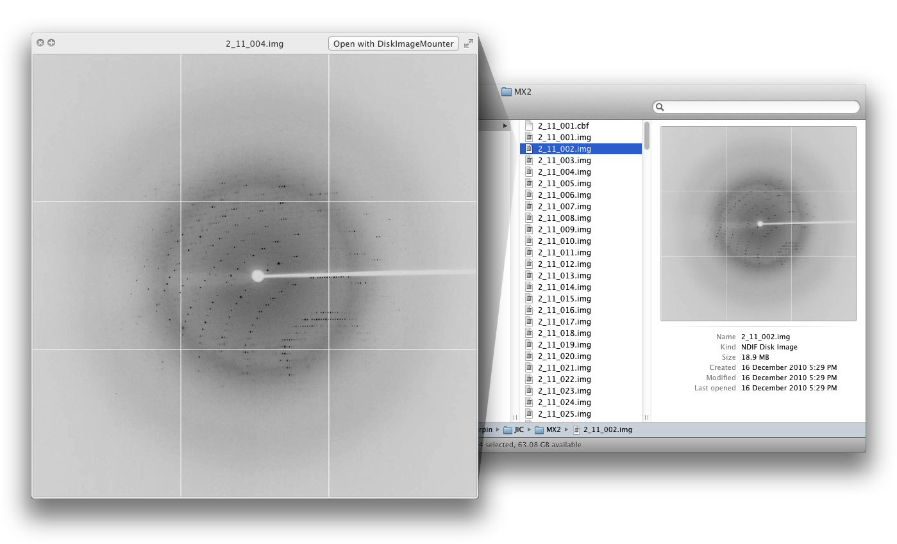
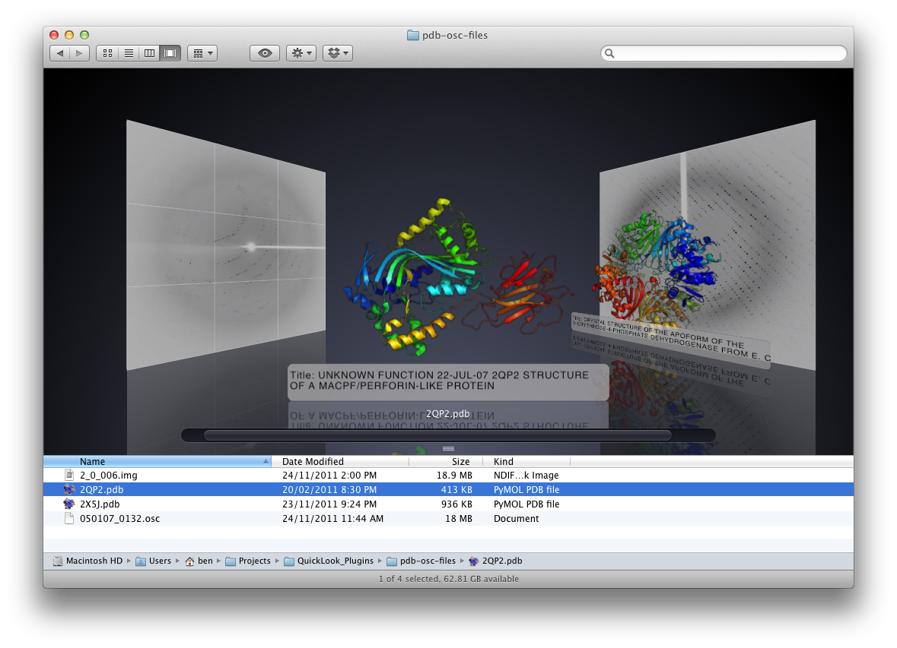

Introduction
Data visualization is a key, daily activity in structural biology, and often requires several software applications that can access different data formats. The most common data encountered in X-ray protein crystallography are arguably raw X-ray diffraction images and atomic coordinates in PDB format. There are several available software packages that open and manipulate both filetypes. However, on many occasions it is desirable to search, identify and visualize in a simple way many files rapidly without executing memory-intensive and often multifunctional software packages.
To account for this, we have written two independent QuickLook plugins for the Apple OSX operating system, one for viewing Protein Data Bank (PDB) files and the other for X-ray diffraction images.
QuickLookPDB: The PDB plugin can use pymol to quickly render thumbnail images (Figure 1), while the heart of the plugin lies with the integration of Bosco Ho’s HTML 5 PDB viewer, Jolecule (Figure 2). Jolecule provides the user with a lightweight ’3d’ interactive viewer without the need for opening larger applications like PyMOL, Coot, Chimera or whatever chooses your fancy. Furthermore, we attempt to extract important metadata from the PDB file and visibly present for rapid identification of the structure.
QuickLookDiffract: The X-ray diffraction image plugin is designed to open .img and .osc file formats, convert the file to a jpeg and cache it for later display. This is done using a custom version of the CCP4 diff2jpeg library that is built into the plugin (Figure 3).
The plugins are currently available together with an installer or separately, but require manual installation. The plugins have been tested on OSX 10.6, 10.7 and 10.8. Unfortunately, jolecule will not function on 10.6 as webkit was not introduced until OSX 10.7
Screenshots
Figure 1: Available views of a folder containing PDB files. Shown on the right is a Finder window of a folder containing PDB files with the PyMol rendered cartoon thumbnail. On the left is a QuickLook popup of the same PDB file using the Jolecule viewer.
Figure 2: QuickLook views of PDB files using Jolecule. (A) Default cartoon view of a multi-chain protein complex, showing the two chains as different colours. (B) Zoomed view of a protein active site showing control of the z-slab, labelling of a selected residue and display of neighbouring residues as ball-and-stick representation. (C) Cartoon view of a protein-DNA complex, showing the two protein chains as red-brown and green and the DNA helix as blue and gold. (D) Overlay of C-alpha chains of two similar structures.
Figure 3: Available views of a folder containing X-ray diffraction images. Shown on the right is a Finder window displaying the thumbnail view of a diffraction image. On the left is the QuickLook view of the same diffraction image
Figure 4: Cover flow view of a folder containing PDB’s and diffraction images.